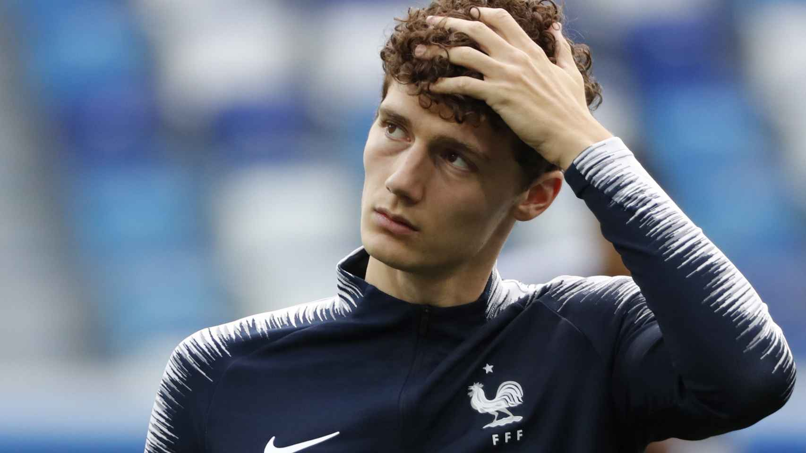
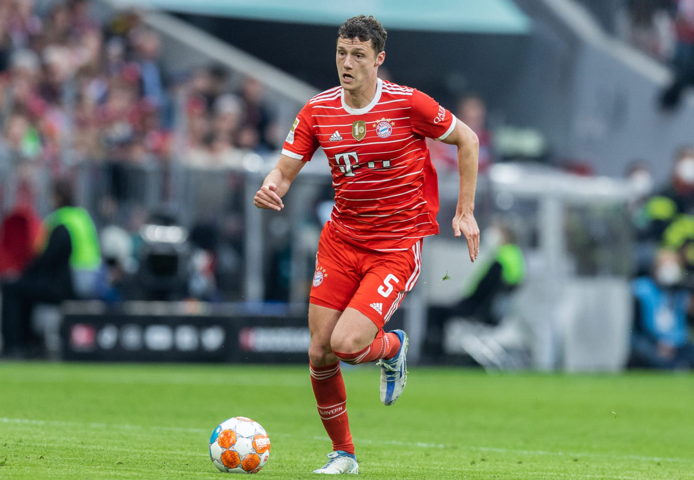

Benjamin Pavard

| Inicio | Biografia | Logros | Contacto |
Benjamin Pavard |
|||
|  | |||
| Benjamin Jacques Marcel Pavard (Maubeuge, Alta Francia, 28 de marzo de 1996) es un futbolista francés que juega en la posición de defensa en el Bayern de Múnich de la Bundesliga de Alemania. También es internacional con la selección francesa. | |||
|
 | ||
| Todos los derechos reservados 2022Eva Giteau © ® | |||